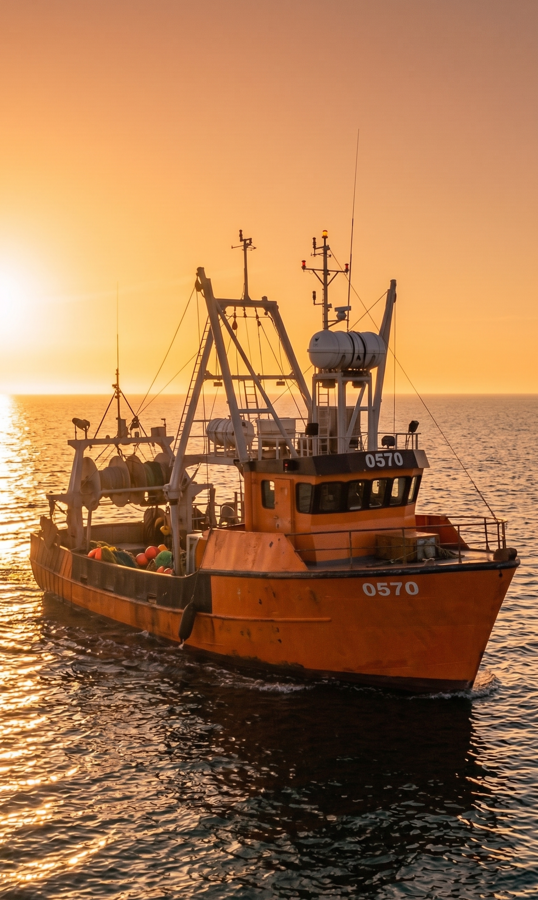
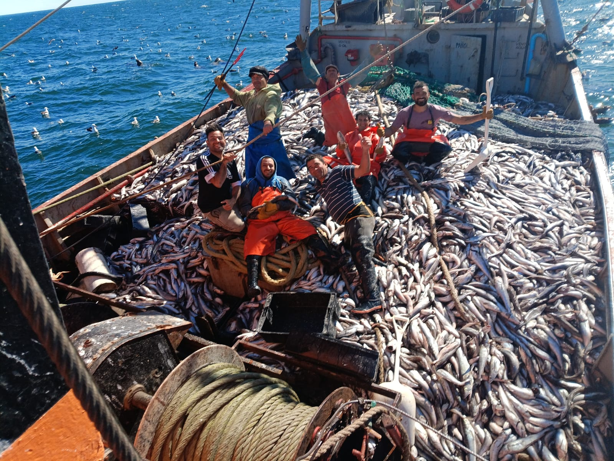
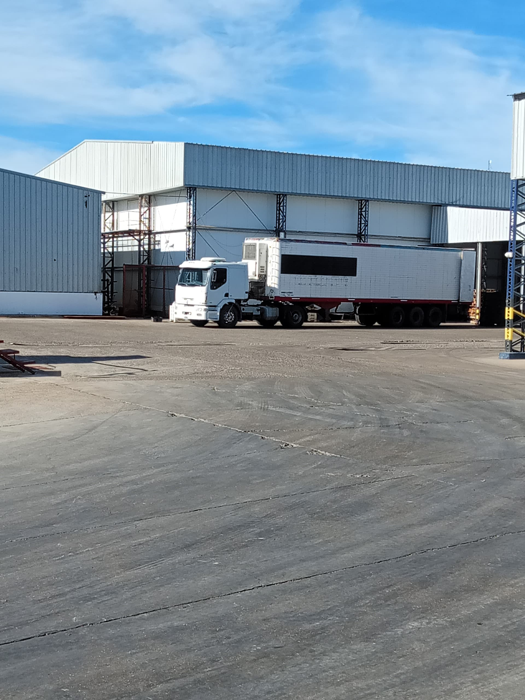
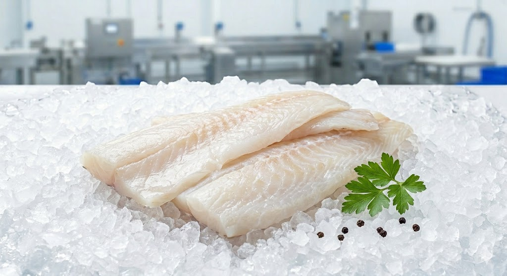

Pescado Fresco del Mar a tu Mesa
En Pescatlántica controlamos toda la cadena: captura, procesamiento, distribución y venta.
Comprar productos
Nuestra flota
Contamos con embarcaciones propias que operan diariamente en el Atlántico Sur garantizando trazabilidad desde el origen.
Captura diaria
Nuestro equipo realiza capturas diarias asegurando productos frescos y abastecimiento constante.


Procesamiento y distribución
Procesamos rápidamente cada producto y mantenemos cadena de frío durante toda la logística.
Calidad premium

Productos frescos y congelados listos para restaurantes, supermercados y consumidores finales.
Ver catálogo